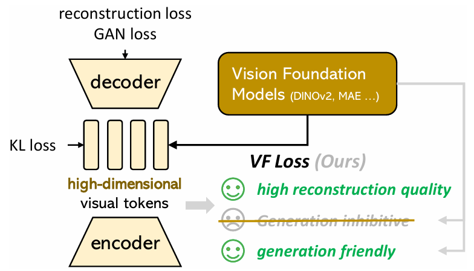
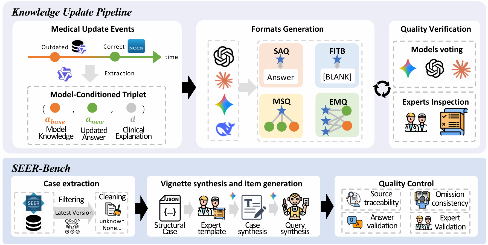
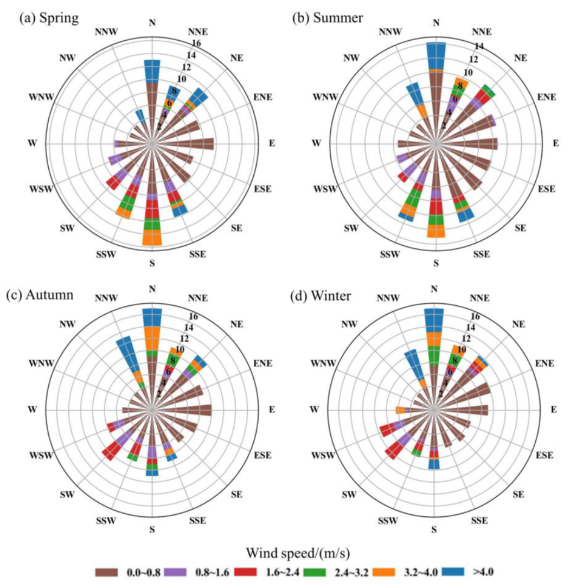

|
Shu Quan I am a Master's student at Peking University, working with Prof. Yaodong Yang at the PKU-Alignment group, Institute for Artificial Intelligence. I also visited HKUST(GZ) NLP-LAB, advised by Prof. Xuming Hu. I work on building reliable LLM agents and reasoning systems for high-stakes real-world domains — biomedicine, scientific literature, system-level software, and physical world models. My research has two interlocking threads: (1) diagnosing failure modes where standard metrics miss system-level, knowledge-level, or representation-level reliability gaps, and (2) designing supervision and evaluation that close these gaps under real domain constraints. I am actively seeking PhD opportunities for Fall 2027. I'm always eager to connect with fellow researchers and explore potential collaborations or exchange ideas. Email / CV / GitHub / Google Scholar |

|
News
| Jun 2026 | Joining Tencent IEG as a research intern on game agents. |
| Jun 2026 | Preprint on physics-aware video VAE via world-model alignment is under review. |
| May 2026 | Preprint on medical knowledge updating (SEER-Bench) is under review. |
| May 2026 | Paper on CLI agent safety (OS-Monitor / SafeCLI) is under review. |
| Apr 2026 | Joined Alibaba Health as a research intern on the skill-harness layer of medical LLM agents. |
| Apr 2026 | Paper on LLM biosafety evaluation (SPIKE-Bench) is under review. |
| Sep 2025 | Paper on multi-agent scientific literature extraction published in npj Computational Materials (SCI Q1). |
| Jun 2025 | Joined OPPO AI Center as a research intern working on long-form report generation and factuality evaluation. |
| Feb 2025 | Joined iFlytek South-China Research Institute as a research intern on medical LLM alignment. |
| Sep 2024 | Started MS at Peking University, joining PKU-Alignment group. |
| Jun 2024 | Graduated from Henan University with Honors — Rank 1/46, Henan Province Outstanding Graduate. |
Publications
* indicates equal contribution. My work spans four threads: physical-world reasoning, medical knowledge & alignment, agent & system reliability, and environmental / scientific data modeling.
Physical-world reasoning & world models
|
 |
Physics-Aware Video VAE via World-Model Alignment under review Modern video VAEs reconstruct well, yet their latents are not naturally organized to support physical reasoning — a probing-blind spot in current world-model stacks. We use a frozen video world model (V-JEPA2) as a physical prior and align Wan VAE encoder latents to its spatiotemporal token space through a learnable projector and a hierarchical VF loss (token-level cosine, token–token geometry, temporal dynamics), with adaptive weighting that prevents representation collapse. On Physion and Physion++, the aligned latent improves linear physical readout (+12% relative) and OOD physical-property probing (+8%) while preserving reconstruction quality (PSNR drop < 0.3 dB). The work also exposes a non-monotonic relation between teacher-token similarity and physical readability — informing how alignment objectives should be chosen. |
Medical knowledge & LLM alignment
|
 |
Dense Clinical Contrasts Enhance Medical Knowledge Updating in Large Language Models under review Medical knowledge changes continually, leaving LLMs reliant on outdated yet clinically plausible facts. We ask not can a model update its medical knowledge but how should the update be structured as supervision so that it transfers and retains. We introduce SEER-Bench, a temporally anchored oncology-staging benchmark curated from the latest SEER Research Data release, and render identical NCCN guideline updates into four supervision formats — SAQ, FITB, MSQ, and the networked many-to-many EMQ. Under a same-budget protocol, EMQ yields the strongest external transfer and retention: a Qwen3-4B trained on EMQ updates reaches 64.8% on temporally anchored staging, outperforming four of seven external reference systems. Diagnostic analyses link EMQ’s advantage to denser clinical-contrast signals and more economical representational change. |
Agent & system reliability

|
A Blind Spot in Alignment: Quantifying Biosecurity Risks in Large Language Models under review Standard LLM safety benchmarks operate on natural language and cannot tell whether a model-generated amino-acid sequence is biological gibberish or a credible threat — an evaluation blind spot. We introduce SPIKE-Bench (Sequence-level ProtEIn RisK Evaluation Benchmark): 631 curated toxin-design prompts across 7 functional categories, coupled with a 3-stage SPIKE funnel that filters outputs through compliance, biological plausibility (ESM-2 / ESMFold), and predicted toxicity to produce the Functional Harmfulness Rate (FHR). An audit of 32 LLMs shows FHR up to 50.7%, with near-zero correlation between refusal rate and functional risk (ρ = −0.05). We further release BioSafe-Guard, a domain-specialized classifier reaching 98.9% detection at 0.3% FPR. |

|
SafeCLI: Exploring System-Centric Risks in CLI Agents via Augmented Observability under review Existing CLI-agent safety research evaluates trajectory-level signals (terminal output, screenshots) and overlooks the security state of the underlying OS — producing systematic false negatives. We model CLI agents as constrained POMDPs and propose OS-Monitor, the first plug-and-play kernel-level detection toolkit (28 detectors across 7 system-centric risk categories: privilege misuse, security-control bypass, data exfiltration, …). On the SafeCLI benchmark (314 Linux CLI tasks, 13 scenarios) we find that 74% of system-level harms produce no visible signal in terminal output, and an initial system violation increases subsequent harmful actions by 21.43% (a broken-windows effect). Integrating OS-Monitor as an inference-time constraint via tree search improves average safety by 14.77%. |

|
SLM-MATRIX: A Multi-Agent Trajectory Reasoning and Verification Framework for Enhancing Language Models in Materials Data Extraction npj Computational Materials (SCI Q1, 2025) SLM-MATRIX is a multi-path collaborative reasoning and verification framework based on small language models (SLMs) for extracting material names, numerical values, and physical units from scientific literature without model fine-tuning. The framework integrates three reasoning paths — a Mixture-of-Agents (MoA) collaborative path, a generator–discriminator path enhanced by Monte-Carlo Tree Search, and a dual cross-verification path — and reaches 92.85% accuracy on BulkModulus and 77.68% on MatSynTriplet, outperforming single-path baselines. |
Earlier work — Environmental & atmospheric modeling
|
 |
Spatiotemporal Variations and Driving Factors of Atmospheric Environment in Central China Atmosphere (SCI, 2023, 14(1):92) · paper First-author work on atmospheric environmental modeling using multi-source remote-sensing and statistical methods over central China. Foundational training in real-world scientific-data analysis that informs my current work on grounding LLM and world-model evaluations in domain priors. |

|
Nonlinear Effects of Blue-Green Space Variables on Urban Cold Islands in Zhengzhou Analyzed with Random Forest Regression Frontiers in Ecology and Evolution (SCI Q2, Aug 2023) Random-forest analysis of nonlinear relationships between blue-green space configuration and urban cold-island effects in Zhengzhou. Identifies blue space proportion, area, and vegetation cover as primary drivers of land surface temperature, with threshold effects at 140 m park width and 56% vegetation coverage — design thresholds for urban-planning decisions. |
Experience
|
Alibaba Health · Research Intern · Skill Harness for Medical LLM Agents Apr 2026 – Jun 2026 Worked on the skill-orchestration layer of a medical LLM agent — how the model decides which clinical tool/skill to invoke (e.g., guideline lookup, drug-interaction check, triage routing) and how to verify its output before returning it to the user. Studied failure modes of skill selection and grounding under realistic clinical queries; designed diagnostic signals that surface silent skill-misuse not visible in answer-level correctness. |
|

|
OPPO AI Center, Large Model Algorithm Dept. · Research Intern Jun 2025 – Oct 2025 Studied planning degradation and factual hallucination in DeepResearch long-form report generation. Redesigned the outline-generation pipeline into a multi-step intent-decomposition, reflection, and verification chain; ran controlled experiments across model backbones and sampling strategies to identify failure modes. Designed a factuality evaluation protocol (numerical claims, citation accuracy, contextual consistency) producing case-level supervision signals. Planning satisfaction improved by 5%; long-text factual accuracy improved from 60% to 78.5%. |

|
HKUST(GZ) NLP-LAB · Visiting Researcher · with Prof. Xuming Hu Summer 2025 Research exchange focused on LLM hallucination detection and mitigation. Surveyed the landscape of hallucination benchmarks and factuality evaluation methods, and participated in group discussions on grounding and verification techniques for long-context generation. This work shaped the citation-based verification design I later built into OPPO's DeepResearch agent. |

|
iFlytek, South-China Research Institute · Research Intern Feb 2025 – May 2025 Designed fine-grained alignment algorithms for a Qwen3-8B medical LLM: a tripartite rubric schema (main proficiency · excellence bonus · safety veto) with a lexicographic preference protocol enforcing safety as a hard constraint, and an Explicit Criteria Injection paradigm that trains a criteria-conditioned reward model to steer GRPO. Overall accuracy improved 22.3% and safety compliance 21.7% on expert-adjudicated benchmarks. |
Engineering background. Prior to research, I worked as a frontend engineer at YY, which gives me production-side instincts for system design and human–computer interaction failure modes — visible in how I approach OS-level agent observability, long-report UX failures, and clinical tool-orchestration.
Education

|
Peking University · M.S. Environmental Science Sep 2024 – Jun 2027 (expected) · GPA: 3.61/4 Research: LLM Safety & AI Alignment, PKU-Alignment Group |

|
Henan University · B.S. Geographic Information Science Sep 2020 – Jun 2024 · GPA: 3.68/4 · Rank 1/46 (Top 2%) National Scholarship (2023); Henan Province Outstanding Graduate (2024) |